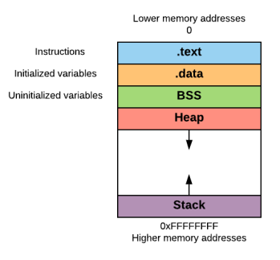

Stack
The
Stack is a Last-in-First-out (
LIFO) block of memory. It is located in the higher part of the memory.
The
Stack is like an array used for saving a function’s return addresses, passing function arguments, and storing local variables.
How stack grows?as we can see from the memory structure diagram,
• the
Stack grows downward, towards the lower memory addresses
• the
Heap grows upward, towards the higher memory addresses
This is probably due to historical reasons when the memory in old computers was limited and divided into two parts:
Heap and
StackESP register (x86 naming convention)The
ESP register (Stack Pointer) points the top of the stack. ESP is modified each time a value is pushed in (
PUSH) or popped out (
POP)
PUSH → The ESP value is decremented(the Stack grows backward), in x86 by 4 or in x64 by 8. Then PUSH write data to the new top of the stack.
POP → It retrieves data from the top of the Stack(address location pointed by ESP). after a POP operation, the ESP value is incremented, in x86 by 4 or in x64 by 8.
Remember that when a value is popped from the stack is not deleted (or zeroed). It will stay in the stack until another instruction overwrites it.
{kind=link}